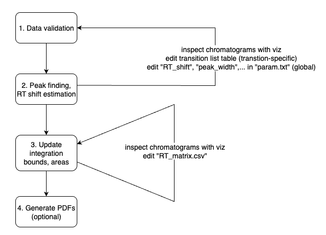
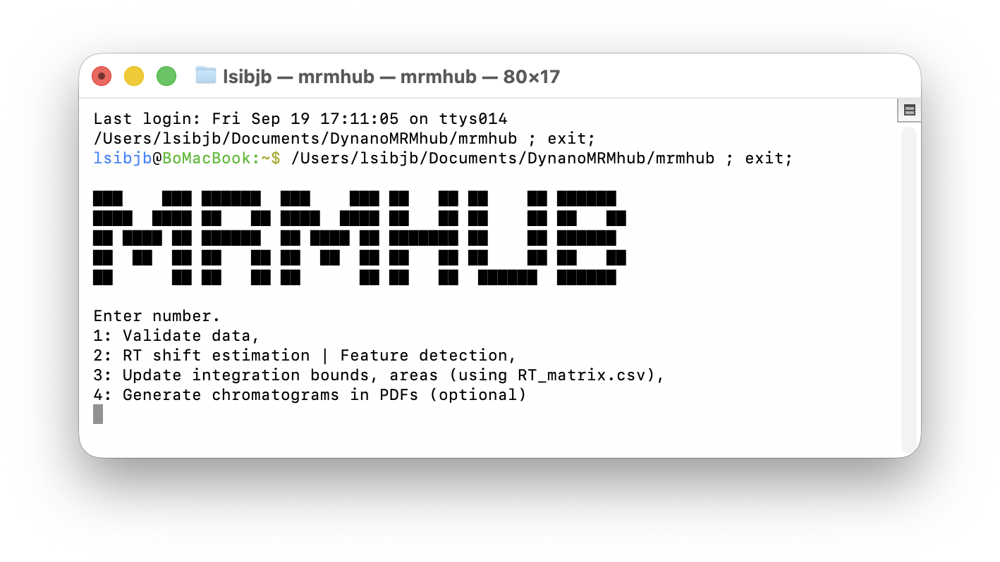

Running INTEGRATOR
The four INTEGRATOR processing steps — data validation, peak finding and RT-shift estimation, peak integration, and optional PDF generation.

Upon execution, the software launches a terminal user interface with four different menu options. For new datasets, the steps 1 - 2 are applied sequentially. The final step 4 is optional and only used when integration results as PDFs files are needed.

Step 1 — Data Validation
The first step verifies the files and information provided by the user in the input files. Inconsistencies are reported via the text files, which are saved into the directory as the MRMhub application. The files are are only generated when issues were identified.
missing_files.txtlists mzML files that are present in the data folder but not listed in the Sample List, as well as files listed in the Sample List but absent from the data folder.missing_compounds.txtreports transitions defined in the Transition List but not found in all mzML files. Note: Transitions present only in a subset of the mzML files are currently not processed.missing_details.txtThis report details the missing transitions and identifies exactly which samples lack them. This is useful when a transition appears in some samples but not others.
Step 2 — Peak Finding and RT-shift estimation
The second step runs the peak finding and picking algorithm. The result of this step is a table with identified peaks (features) with their left and right peak borders in each sample. This table is saved as a CSV file RT_matrix.csv into the same folder as the application and is required for step 3.
The user may further refine these integration bounds per transition and sample basis, before proceeding with the actual peak integration in step 3. For a new dataset, we recommend proceeding directly with peak integration directly, followed by visualization of the results using steps 3 (and 4) and only then to manually adjust specific integration borders. However, we generally discourage users from doing so, unless certain integration can only be achieved through manual intervention.
At this point, the user can launch the integration visualizer application MRMhub-viz (see MRMhub-viz Visualizer) to inspect the integration results, and revise global and per-feature integration parameters (via param.txt and Transition List) and re-attempt peak integration via steps 1 and 2.
Once automated integration is deemed optimized, final manual adjustments to individual peaks can be made in the RT_matrix.csv (see Step 2). After these optional manual adjustment, the final peak integration is performed by (re-)running step 3.
Warning: Each time step 2 is executed, RT_matrix.csv is overwritten, and any manual modifications made by the user will be lost.
Step 3 — Peak Integration
In the third step, peaks integration of peaks identified in step 2 will be performed and corresponding results saved in following default output files:
quant_raw.csvA wide format table with peak areas. Additionally the top 3 rows contain the precursor and product m/z and peak apex retention time values.long.csvA long format table contain peak area,s height, peak apex retention time, FWMH (Full Width at Half Maximum) and integration borders. Additionally, the corresponding precursor and product m/z values, the analysis time stamp (extracted from the mzML files) as well as the metadata from the input files (i.e. sample type, ISTD, batch identifier) are also included.miscA folder containing the peak integration results in a binary format, which is used by the visualizer application MRMhub-viz and in step 4.
All output tables are plain comma-separated CSV. long.csv is the canonical hand-off to QUANT (one row per sample × feature); quant_raw.csv is a convenience wide-format export of peak areas and is not read by the QUANT module.
long.csv columns
These are the columns QUANT’s import_data_mrmhub() reads from long.csv. Only feature_name and raw_data_filename are strictly required (plus at least one intensity column); the rest are metadata and measurements carried through to the MRMhubExperiment.
long.csv column |
Meaning |
|---|---|
raw_data_filename |
Source mzML file name (becomes the analysis identifier) |
time_stamp |
Acquisition timestamp, read from the mzML |
sample_type |
Sample / QC type, from batch_info.csv |
batch |
Batch identifier, from batch_info.csv |
feature_name |
Feature (analyte) identifier, from the transition list |
internal_standard |
Assigned ISTD feature, from the transition list |
rt_apex |
Retention time at the peak apex (min) |
area |
Integrated peak area |
height |
Peak height |
FWHM |
Full width at half maximum |
rt_int_start / rt_int_end |
Left / right integration borders (min) |
polarity |
Ionisation polarity |
precursor_mz / product_mz |
Transition m/z values |
collision_energy |
Collision energy |
quant_raw.csv is a wide table of peak areas (features × samples); its top rows additionally carry the precursor and product m/z and the apex retention time per transition.
Continue post-processing in QUANT. The long.csv file is the canonical hand-off into the QUANT R package: import_data_mrmhub("path/to/long.csv", import_metadata = TRUE) loads the file and its embedded metadata into an MRMhubExperiment for ISTD normalisation, drift/batch correction, QC, and reporting. See the QUANT documentation ↗.
Step 4 — Generate PDF results (optional)
The fourth step produces integration results into PDF files, which is an optional step. This step creates three folder with different types of results:
by_transition: Contains one PDF per transition, with chromatograms plotted for each sample. Only transitions with at least one feature (peak) exceeding the minimum intensity threshold value are included here (seeby_transition_low).by_transition_low: Contains PDFs of transitions where none of the integrated features (peaks) had an area exceeding the minimum intensity threshold defined by the constantlow_intensity_thresholdin the providedMRMhub_plot.rR script.by_sample: Provides a PDF for each reference sample; all of the sample’s transitions are plotted within the same file.
For efficient viewing of PDFs on macOS, open the PDF folder, press Space to start Quick Look, then use the up/down arrow keys to move to between transitions (files). Use the scroll wheel or trackpad to scroll through each PDF.
Note: In large-scale projects, generating many large PDF files can take considerable time depending on computer performance and the number of cores used. The number of cores use to generate the PDFs can be adjusted via the constant ncores in the provided MRMhub_plot.rscript.
Next
- MRMhub-viz Visualizer — review and refine the integration results.
- Sharing Results — bundle data and parameters for reproducibility.